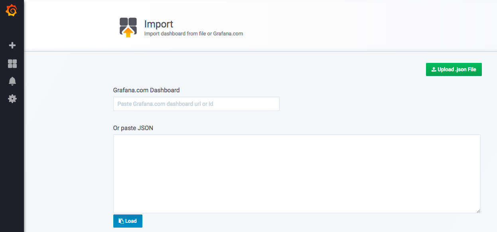

Monitoring in kubernetes

Container 환경에서 떠오르는 도전 과제
운영 환경으로 Container 환경 사용
운영 환경에서 Kubernets 사용 비율 증가. => Container 기반 운영 환경 증가
Container 환경에서 떠오르는 도전 과제
Container 환경을 운영 환경으로 고려하기 시작하면서 운영을 위해 꼭 필요한 모니터링에 대한 관심 증가
[출처 : CNCF https://www.cncf.io/blog/2017/12/06/cloud-native-technologies-scaling-production-applications/]
Cloud Native 환경에서 Monitoring Architecture의 변화
Legacy
- 고사양의 서버에 Application을 크게 운영
- Monitoring Agent를 서버에 설치
- Agent가 App 및 OS의 metric 수집해 Backend에 전송
Cloud Native
- Application을 작게 운영하고 필요할 때 마다 확장
- 동적으로 확장하는 서버에 Agent 설치 불가능
- Kubernetes API를 통해 동적으로 확장된 서버 endpoint를 discovery
- Monitoring Backend에서 discovery한 endpoint를 통해 metric 수집
Monitoring Architecture
Prometheus
- Service Discovery, Metric 수집 및 저장, Alert 기능을 통합해 제공하는 Monitoring 시스템
- CNCF의 메인 프로젝트로 Container 기반 Monitoring 시스템의 defactor
- Kubernetes외의 다른 Cloud Provider에 대한 Service Discovery 기능 제공으로 동적인 Cloud를 효율적을 모니터링
- 자체 Alert 엔진 보유. 외부 시스템과 연계하여 Alarm을 송신 가능
- Web UI와 Grafana를 통해 Data 시각화
- 자체 TSDB(Time Series Database) 보유. Metric data 저장 및 관리에 최적화
- 다양한 exporter(수집기)를 제공해 외부 시스템 통합 모니터링 가능
Service Discovery & Scrape
- Prometheus가 Kubernetes API Server로 부터 monitoring metric 수집 대상을 discovery
- 각 대상으로 부터 metic scrape(pull)
- Pod(Application)이 동적으로 증가하면 discovery 통해 자동으로 수집 대상에 추가
Monitoring 실습
실습 목표
- Demo Application 및 JMX Exporter를 Kubernetes cluster에 배포
- Kubernetes로 부터 App 및 JMX Exporter target 정보를 discovery
- Target으로 부터 Pod 및 JVM metrics 수집
- Grafana dashboard에서 Pod 및 JMX metrics 정보를 시각화
- 참고 : 이 실습은 Kubernetes cluster를 위한 Prometheus와 Grafana가 설치되어 있다는 전제하에 작성했습니다. Prometheus와 Grafana 설치에 대한 가이드는 추후 작성 예정입니다.
Demo Application Download 및 Build
Demo Application 다운로드
$ git clone https://github.com/cloudz-labs/spring-boot-monitoring-demo.git $ cd spring-boot-monitoring-demo
Maven build
$ mvn clean package
Dockerfile 편집
$ vi Dockerfile FROM openjdk:8-jdk-alpine ADD target/spring-boot-monitoring-demo-0.0.1-SNAPSHOT.jar app.jar ADD jmx-exporter/jmx_prometheus_javaagent-0.3.1.jar jmx_prometheus_javaagent-0.3.1.jar ADD jmx-exporter/tomcat.yaml tomcat.yaml ENTRYPOINT ["java","-Djava.security.egd=file:/dev/./urandom","-javaagent:/jmx_prometheus_javaagent-0.3.1.jar=8090:/tomcat.yaml","-jar","/app.jar"]
ADD target/spring-boot-monitoring-demo-0.0.1-SNAPSHOT.jar app.jarDemo application을 Docker container에 추가
jmx-exporter/jmx_prometheus_javaagent-0.3.1.jarPrometheus JMX exporter agent를 Docker container에 추가
jmx-exporter/tomcat.yaml tomcat.yamlJMX exporter Tomcat configuration file을 Docker container에 추가
ENTRYPOINT ...Demo App 및 JMX exporter agent 실행
Docker build
$ docker build -t spring-boot-monitoring-demo . $ docker images REPOSITORY TAG IMAGE ID CREATED SIZE spring-boot-monitoring-demo latest 1444f50dcadc 9 seconds ago 117M
Application 실행
$ docker run -p 8080:8080 -p 8090:8090 spring-boot-monitoring-demo
Web browser에서
localhost:8080에 접속Hello World!메세지가 출력됨Web browser에서
localhost:8090에 접속아래와 같이 JVM metrics 출력됨
# HELP jvm_gc_collection_seconds Time spent in a given JVM garbage collector in seconds. # TYPE jvm_gc_collection_seconds summary jvm_gc_collection_seconds_count{gc="PS Scavenge",} 15.0 jvm_gc_collection_seconds_sum{gc="PS Scavenge",} 0.18 jvm_gc_collection_seconds_count{gc="PS MarkSweep",} 2.0 jvm_gc_collection_seconds_sum{gc="PS MarkSweep",} 0.262 ...Docker image를 Docker registry에 push
$ docker tag spring-boot-monitoring-demo:[VERSION] [REPOSITORY_ADDRESS]/spring-boot-monitoring-demo:[VERSION] $ docker push [REPOSITORY_ADDRESS]/spring-boot-monitoring-demo:[VERSION]
Demo Application 배포
Demo Application Deployment yaml에 discovery, docker image 정보 수정(default 그대로 사용해도 무관)
$ vi kubernetes/deployment.yaml ... spec: ... template: metadata: ... annotations: prometheus.io/scrape: "true" prometheus.io/port: "8090" prometheus.io/path: /metrics spec: containers: - name: spring-boot-monitoring-demo image: dtlabs/spring-boot-monitoring-demo:latestspec.template.metadata.annotations.prometheus.io/scrapeDiscorvery 대상 여부
spec.template.metadata.annotations.prometheus.io/portDiscovery target port
spec.template.metadata.annotations.prometheus.io/pathDiscovery target path
spec.template.spec.containers.imageDocker image path
Demo Application 배포
$ kubectl apply -f kubernetes/deployment.yaml $ kubectl get po NAME READY STATUS RESTARTS AGE spring-boot-monitoring-demo-5795695496-ljfkw 1/1 Running 0 1m spring-boot-monitoring-demo-5795695496-mqzrr 1/1 Running 0 1m
Demo Application에 8080 Port Forwarding 설정
Web browser에서
localhost:8080으로 접속.Hello World!메세지가 출력됨.$ kubectl port-forward spring-boot-monitoring-demo-5795695496-ljfkw 8080:8080 Forwarding from 127.0.0.1:8080 -> 8080
Demo Application에 8090 Port Forwarding 설정
Web browser에서
localhost:8090으로 접속.아래와 같이 JMX metrics가 출력됨.
# HELP jvm_gc_collection_seconds Time spent in a given JVM garbage collector in seconds. # TYPE jvm_gc_collection_seconds summary jvm_gc_collection_seconds_count{gc="PS Scavenge",} 15.0 jvm_gc_collection_seconds_sum{gc="PS Scavenge",} 0.18 jvm_gc_collection_seconds_count{gc="PS MarkSweep",} 2.0 jvm_gc_collection_seconds_sum{gc="PS MarkSweep",} 0.262 ...
Monitoring Dashboard 구성 및 활용
JMX Dashboard 구성
Grafana Dashboard 접속 > Left 메뉴 >
+버튼 선택 > Import 메뉴 선택Upload .json File버튼 선택다운로드 받은
spring-boot-monitoring-demo프로젝트 >jmx-exporter>jmx-exporter-tomcat-grafana-dashboard.json파일 import
Options > prometheus combo box > 원하는 data source 선택 >
Import버튼 선택
- 참고 : data source 설정은 prometheus로 부터 data를 검색하기 위한 용도
Heap Memory, Threads, Class Loading, Open File, GC 등에 대한 metrics을 그래프 형태로 조회

Pod(Application) Dashboard 활용
Kubernets cluster 용도로 Prometheus 구성 시 동적으로 생성되는 Pod를 discovery 해서 자동으로 metric을 수집합니다. 이 문서에서는 Kubernetes cluster를 위한 Prometheus와 Grafana가 설치되어 있다는 전제하에 작성했습니다. Prometheus와 Grafana 설치에 대한 가이드는 추후 작성 예정입니다.
Dashboard List > Container Dashboards > Kubernetes: POD Overview 선택

Pod(Application)의 cpu, memory, network metrics을 그래프 형태로 조회